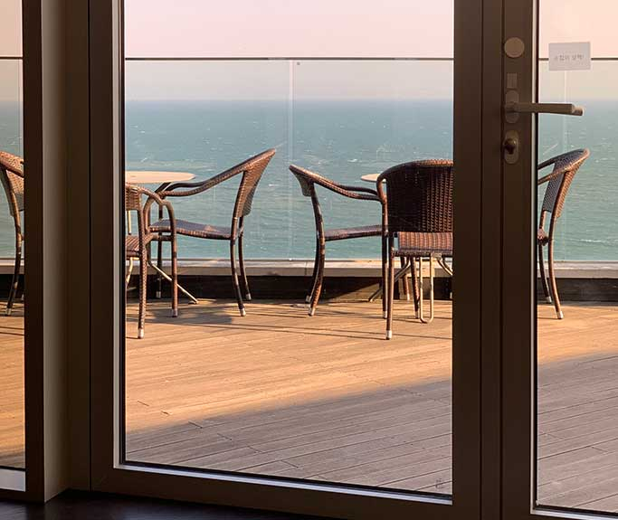
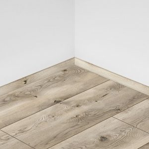
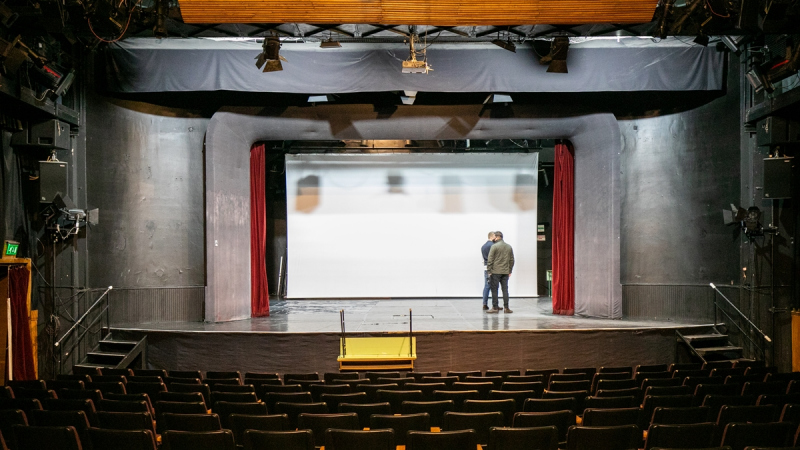
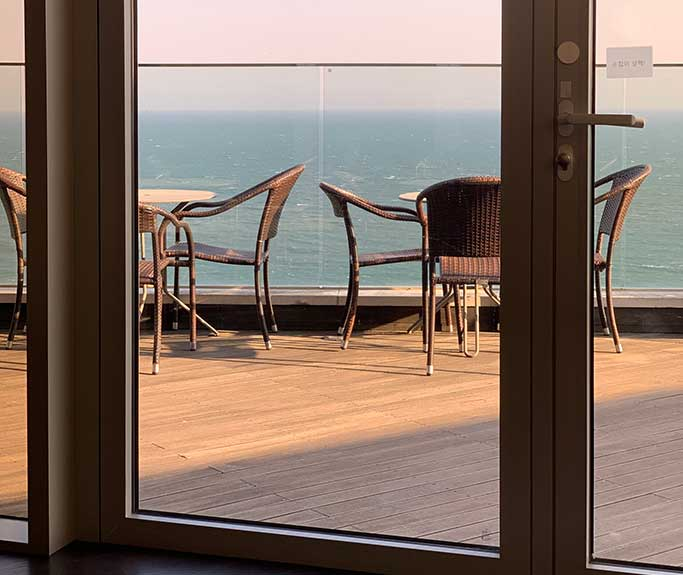
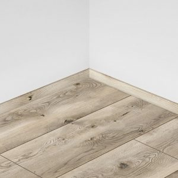
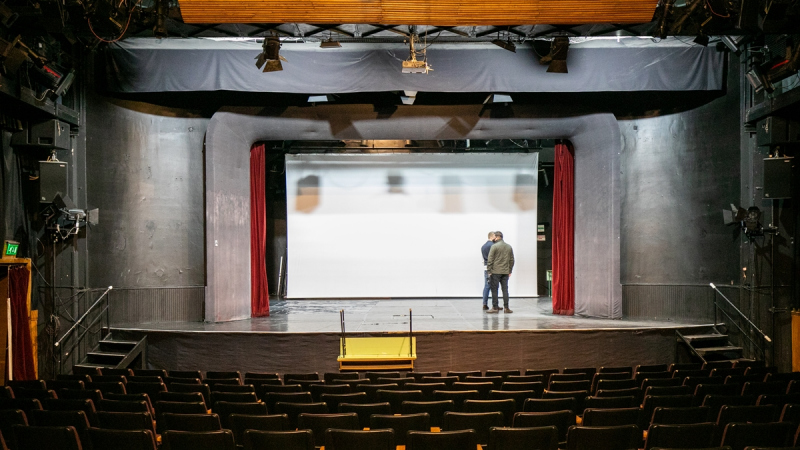

Műveltségi tesztkérdések
1. Mi a Twister?
modern táncfajtaédesség
társasjáték(megoldas)
2. Ki a holográfia feltalálója?
3. Mi az arany vegyjele?
H2o PtHg Au(helyes)
H O
Cu N
4. Mitől fél aki nomofóbiás? (a mobiltelefon hiányától)
5. Melyik kép ábrázolja a pádimentomot?
 




